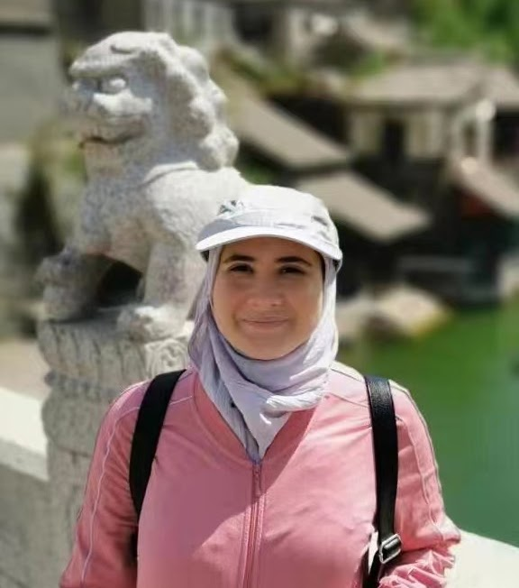

PUBLICATION · 2026
Variation of the spectrum
The second part of my work on the spectrum of p-adic linear differential equations is published in the Journal of the London Mathematical Society.
Publication detailsMathematics · BIMSA, Beijing
I study p-adic differential equations through the geometry of their spectra.
Assistant Professor at the
Beijing Institute of Mathematical Sciences
and Applications

My research lies at the intersection of p-adic differential equations, non-Archimedean geometry and ultrametric spectral theory. I am interested in how the Berkovich spectrum of a differential operator captures the structure and variation of its solutions.
I joined BIMSA as an Assistant Professor in January 2024, following a postdoctoral position at the Yau Mathematical Sciences Center, Tsinghua University, and BIMSA. I received my Ph.D. from the Université de Montpellier in 2018, under the supervision of Andrea Pulita and Jérôme Poineau.
Research interests: p-adic differential equations · Berkovich spaces · ultrametric functional analysis.
PUBLICATION · 2026
The second part of my work on the spectrum of p-adic linear differential equations is published in the Journal of the London Mathematical Society.
Publication detailsTEACHING · AUTUMN 2026
A graduate course at BIMSA, from valuations and extensions of local fields to ramification filtrations and wild examples.
Course informationOffice
A12-202 · BIMSA
Huairou District, Beijing
China